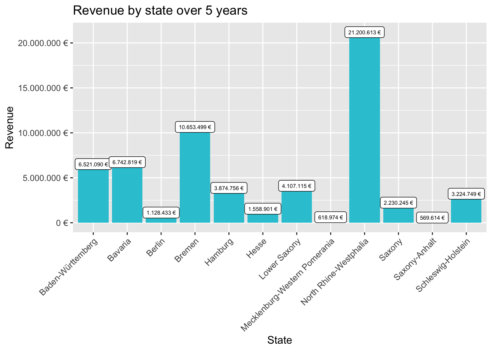
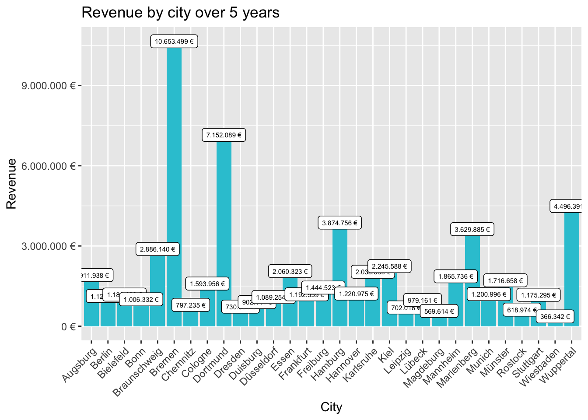
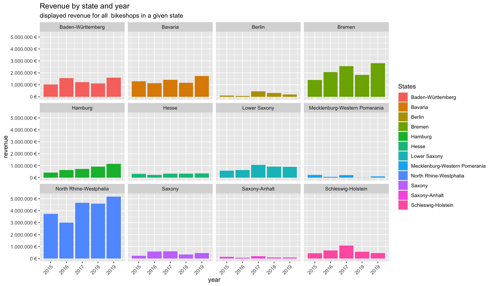
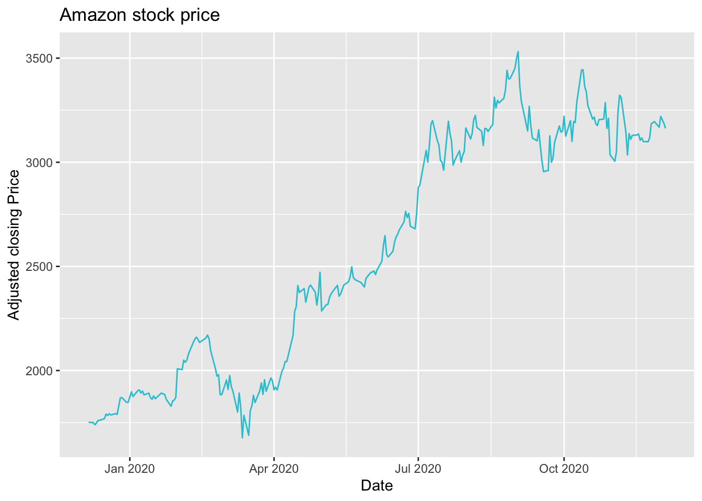
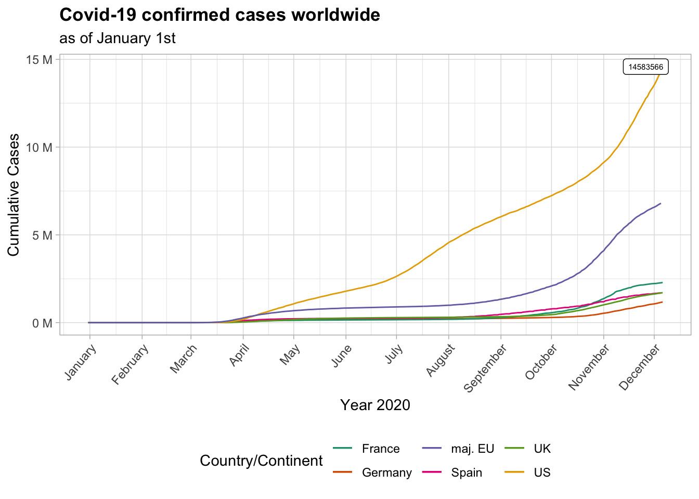
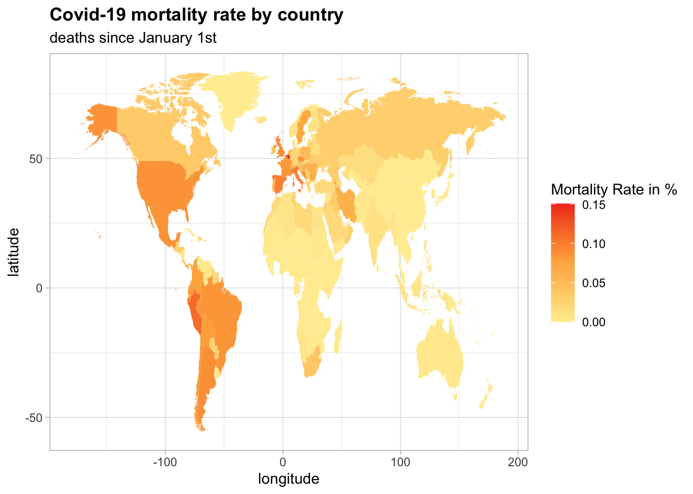

IMPORTANT: Uploaded on 06.12.2020
Problem: Analysis of sales by location: display the total revenue of all bikes shops across a state or city in a bar plot.
library("tidyverse")
library("readxl")
library("lubridate")bikes <- read_excel("00_data/01_bike_sales/01_raw_data/bikes.xlsx") %>% set_names(names(.) %>% str_replace_all("\\.", "_")) %>% select(bike_id, model, price)
shops <- read_excel("00_data/01_bike_sales/01_raw_data/bikeshops.xlsx") %>% set_names(names(.) %>% str_replace_all("\\.", "_"))
orders <- read_excel("00_data/01_bike_sales/01_raw_data/orderlines.xlsx") %>% select(- ...1) %>% set_names(names(.) %>% str_replace_all("\\.", "_"))in the same step some unneeded columns were dropped and all dots in column names were replaced by underscores.
orders_shops_joined <- left_join(orders, shops, by=c("customer_id" = "bikeshop_id")) %>% select(-lat, -lng, -order_line)
joined_data <- left_join(orders_shops_joined, bikes, by=c("product_id"="bike_id")) %>%
#separating city and state
separate(col=location, into=c("city", "state"), sep=", ") %>%
#calculating total order price
mutate(total_price = price*quantity) %>%
#adding year of the sale
mutate(year = year(order_date))getting the sales per state:
sales_by_state <- joined_data %>%
#select needed columns
select(state, total_price) %>%
#grouping by state
group_by(state) %>%
#adding all revenues for the given states
summarize(revenue = sum(total_price)) %>%
#formatting the revenue
mutate(revenue_text = scales::dollar(revenue, big.mark = ".", decimal.mark = ",", prefix = "", suffix = " €"))getting the sales by city
sales_by_city <- joined_data %>%
#select needed columns
select(city, total_price) %>%
#grouping by city
group_by(city) %>%
#adding all revenues for the given city
summarize(revenue = sum(total_price)) %>%
#formatting the revenue
mutate(revenue_text = scales::dollar(revenue, big.mark = ".", decimal.mark = ",", prefix = "", suffix = " €"))for the sales by state:
sales_by_state %>%
# Setup canvas with the columns states (x-axis) and revenue (y-axis)
ggplot(aes(x = state, y = revenue)) +
# Geometries
geom_col(fill = "#2DC6D6") +
geom_label(aes(label = revenue_text), size=2) +
# Formatting
scale_y_continuous(labels = scales::dollar_format(big.mark = ".",
decimal.mark = ",",
prefix = "",
suffix = " €")) +
theme(axis.text.x = element_text(angle = 45, hjust = 1)) +
labs(
title = "Revenue by state over 5 years",
x = "State",
y = "Revenue"
)
for the sales by city:
sales_by_city %>%
# Setup canvas with the columns states (x-axis) and revenue (y-axis)
ggplot(aes(x = city, y = revenue)) +
# Geometries
geom_col(fill = "#2DC6D6") +
geom_label(aes(label = revenue_text), size=2) +
# Formatting
scale_y_continuous(labels = scales::dollar_format(big.mark = ".",
decimal.mark = ",",
prefix = "",
suffix = " €")) +
theme(axis.text.x = element_text(angle = 45, hjust = 1)) +
labs(
title = "Revenue by city over 5 years",
x = "City",
y = "Revenue"
)
Steps 1 to 3 remain the same as in 1.1.1.
sales_by_state_and_year <- joined_data %>%
#select needed columns
select(state, year, total_price) %>%
#grouping by state and year
group_by(state, year) %>%
#adding all revenues for a given state and year
summarize(revenue = sum(total_price)) %>%
#formatting the revenue
mutate(revenue_text = scales::dollar(revenue, big.mark = ".", decimal.mark = ",", prefix = "", suffix = " €"))sales_by_state_and_year %>%
# Set up x, y, fill
ggplot(aes(x = year, y = revenue, fill = state)) +
# Geometries
geom_col() +
# Facet
facet_wrap(~ state) +
# Formatting
scale_y_continuous(labels = scales::dollar_format(big.mark = ".",
decimal.mark = ",",
prefix = "",
suffix = " €")) +
theme(axis.text.x = element_text(angle = 45, hjust = 1)) +
labs(
title = "Revenue by state and year",
subtitle = "displayed revenue for all bikeshops in a given state",
fill = "States"
)
Problem: Acquiring data from an API for a data scientific purpose.
In the following code financial data will be requested from marketstack.com, which provide an API. For the sake of this example, the adjusted daily closing price of Amazon stock will be requested for the time period of one year. A free access to marketstack’s API is granted after signing up and getting an API key, which will be used to authenticate all requests.
library(readr)
library(httr)
library(glue)
library(jsonlite)
library(tidyverse)
library(ggplot2)
library(lubridate)API_KEY <- read_file("00_data/apikey.txt")
symbol = "AMZN" # ticker for the Amazon stock
limit = "300" # number of days, approx. 300 trading days a year
url = glue('http://api.marketstack.com/v1/eod?access_key={API_KEY}&symbols={symbol}&limit=300')amzn <- GET(url) %>% .$content %>% rawToChar() %>% fromJSON() %>% .$data %>% as_tibble() #%>% select(adj_close, date)
head(amzn)## # A tibble: 6 x 13
## open high low close volume adj_high adj_low adj_close adj_open adj_volume
## <dbl> <dbl> <dbl> <dbl> <dbl> <dbl> <dbl> <dbl> <dbl> <dbl>
## 1 3198. 3198. 3159. 3163. 2.91e6 3198. 3159. 3163. 3198. 2913611
## 2 3205. 3229. 3181. 3187. 2.89e6 3229. 3181. 3187. 3205. 2892039
## 3 3222. 3232 3173. 3204. 3.13e6 3232 3173. 3204. 3222. 3129304
## 4 3188. 3249. 3157. 3220. 4.49e6 3249. 3157. 3220. 3188. 4493554
## 5 3208. 3228. 3126. 3168. 4.06e6 3228. 3126. 3168. 3208. 4063916
## 6 3211. 3216. 3190. 3195. 2.39e6 3216. 3190. 3195. 3211. 2392867
## # … with 3 more variables: symbol <chr>, exchange <chr>, date <chr>amzn$date <- as.Date(amzn$date, format="%Y-%m-%dT00:00:00+0000")
ggplot(data=amzn, aes(x=date, y= adj_close)) +
geom_line(color="#2DC6D6") +
labs(x = "Date",
y = "Adjusted closing Price",
title = "Amazon stock price")
Problem: Acquiring data from rosebikes.de via web scraping to build a Database about their products.
library(tidyverse)
library(rvest)url <- "https://www.rosebikes.de/"
# getting raw html from homepage
html_home <- read_html(url)
# scraping the ids for each bike family
bike_family <- html_home %>%
# get nodes for families
html_nodes(css=".main-navigation-category-with-tiles__title") %>%
# getting text in between span tags
html_text() %>%
# in a tibble
as_tibble()
# removing rows (bikes,sales)
bike_family <- bike_family[c(-1,-12),]
#scraping the subdirectories in the same way
bike_family_url <- html_home %>%
html_nodes(css=".main-navigation-category-with-tiles__link ") %>%
html_attr('href') %>%
as_tibble() %>%
# adding in a second row urls of bike families
mutate(url=glue("https://www.rosebikes.de{value}"))
bike_family_url <- bike_family_url[-11,]
#joining the tibbles
bike_family$url <- bike_family_url$url
print(bike_family)## # A tibble: 10 x 2
## value url
## <chr> <glue>
## 1 "\nMTB\n" https://www.rosebikes.de/fahrräder/mtb
## 2 "\nRennrad\n" https://www.rosebikes.de/fahrräder/rennrad
## 3 "\nGravel\n" https://www.rosebikes.de/fahrräder/gravel
## 4 "\nCyclocross\n" https://www.rosebikes.de/fahrräder/cyclocross
## 5 "\nFitness\n" https://www.rosebikes.de/fahrräder/fitness
## 6 "\nE-Bike\n" https://www.rosebikes.de/fahrräder/e-bike
## 7 "\nTrekking\n" https://www.rosebikes.de/fahrräder/trekking
## 8 "\nReise\n" https://www.rosebikes.de/fahrräder/reise
## 9 "\nUrban\n" https://www.rosebikes.de/fahrräder/urban
## 10 "\nKinder\n" https://www.rosebikes.de/fahrräder/kinderurl_road_bikes <- bike_family$url[2] %>% as.character()
road_bikes_html <- read_html(url_road_bikes)
bike_categories_url <- road_bikes_html %>%
html_nodes(css=".catalog-category-bikes__button") %>%
html_attr("href") %>%
enframe(name="position", value="sub_url") %>%
mutate(url=glue("https://www.rosebikes.de{sub_url}")) %>%
select(-sub_url)
bike_categories <- road_bikes_html %>%
html_nodes(css=".catalog-category-bikes__title-text") %>%
html_text() %>%
enframe(name="position", value="category") %>%
left_join(bike_categories_url)Defining a function that will retrieve the data for each bike category
get_bike_data <- function(url) {
html_body <- read_html(url)
model_names <- html_body %>%
html_nodes(css=".catalog-category-model__title") %>%
html_text() %>%
enframe(name="position", value="model_name")
model_infos <- html_body %>%
html_nodes(css=".catalog-category-model-info__list") %>%
html_text() %>%
enframe(name="position", value="infos") %>%
separate(infos, c("weight", "wheel", "equipment"), "\n\n\n")
model_prices <- html_body %>%
html_nodes(css=".product-tile-price__current-value.catalog-category-model__price-current-value") %>%
html_text() %>%
enframe(name="position", value="price")
model_tbl <- left_join(model_names, model_infos) %>% left_join(model_prices)
return(model_tbl)
}
# The data from all bikes is gathered using a for loop and executing the function for all scraped bike category urls.
bike_data = get_bike_data(bike_categories$url[1])
for (i in 2:length(bike_categories$url)) {
bike_data <- rbind(bike_data, get_bike_data(bike_categories$url[i]))
}
head(bike_data)## # A tibble: 6 x 6
## position model_name weight wheel equipment price
## <int> <chr> <chr> <chr> <chr> <chr>
## 1 1 "\nPRO SL DISC… "\nGewic… Laufrad: DT Swiss … "Ausstattung: … "\n1.5…
## 2 2 "\nPRO SL DISC… "\nGewic… Laufrad: DT Swiss … "Ausstattung: … "\n1.8…
## 3 1 "\nPRO SL 105\… "\nGewic… Laufrad: DT Swiss … "Ausstattung: … "\n1.1…
## 4 2 "\nPRO SL Ulte… "\nGewic… Laufrad: DT Swiss … "Ausstattung: … "\n1.4…
## 5 1 "\nREVEAL FOUR… "\nGewic… Laufrad: ROSE - La… "Ausstattung: … "\n2.4…
## 6 2 "\nREVEAL FOUR… "\nGewic… Laufrad: ROSE - La… "Ausstattung: … "\n2.7…In the tibble bike_data, the data for all bikes in the family ‘Rennrad’ are displayed with additional information like price, weight and equipment.
Problem: Which of US companies/corporations have the most number of listed patents? Top 10.
library(tidyverse)
library(vroom)
library(data.table)# load assignee table as data.table
col_assignee <- list(
id = col_character(),
type = col_character(),
name_first = col_character(),
name_last = col_character(),
organization = col_character()
)
assignee_tbl <- vroom(
file = "00_data/assignee.tsv",
delim = "\t",
col_types = col_assignee,
na = c("", "NA", "NULL")
)
setDT(assignee_tbl)
# load patent_assignee table as data.table
col_pa <- list(
patent_id = col_character(),
assignee_id = col_character(),
loaction_id = col_character()
)
pa_tbl <- vroom(
file = "00_data/patent_assignee.tsv",
delim = "\t",
col_types = col_pa,
na = c("", "NA", "NULL")
)
setDT(pa_tbl)combined_data <- merge(x = assignee_tbl, y = pa_tbl,
by.x = "id",
by.y = "assignee_id")
combined_data %>% glimpse()## Rows: 6,789,243
## Columns: 7
## $ id <chr> "org_000ey6U69efJ6KrjwQW8", "org_000ey6U69efJ6KrjwQW8", …
## $ type <chr> "3", "3", "3", "3", "3", "3", "3", "3", "3", "3", "3", "…
## $ name_first <chr> NA, NA, NA, NA, NA, NA, NA, NA, NA, NA, NA, NA, NA, NA, …
## $ name_last <chr> NA, NA, NA, NA, NA, NA, NA, NA, NA, NA, NA, NA, NA, NA, …
## $ organization <chr> "Lhoist Recherche et Developpement S.A.", "Lhoist Recher…
## $ patent_id <chr> "5173279", "5277837", "5290353", "5591247", "10008685", …
## $ location_id <chr> "6324fbf2-ac0f-4403-a100-bd54683189c3", "6324fbf2-ac0f-4…us_patent_companies <- combined_data[type==2,.N, by=organization][order(N, decreasing=TRUE)]
head(us_patent_companies,10) #prints out top 10 companies and number of patents## organization N
## 1: International Business Machines Corporation 139091
## 2: General Electric Company 47121
## 3: Intel Corporation 42156
## 4: Hewlett-Packard Development Company, L.P. 35572
## 5: Microsoft Corporation 30085
## 6: Micron Technology, Inc. 28000
## 7: QUALCOMM Incorporated 24702
## 8: Texas Instruments Incorporated 24181
## 9: Xerox Corporation 23173
## 10: Apple Inc. 21820Problem: Which US companies listed the most patents in 2019? Top 10.
library(lubridate)# load patent table as data.table
# skip all the columns but id and date since the criteria is 2019
col_patent <- list(
id = col_character(),
type = col_skip(),
number = col_skip(),
country = col_skip(),
date = col_date("%Y-%m-%d"),
abstract = col_skip(),
title = col_skip(),
kind = col_skip(),
num_claims = col_skip(),
filename = col_skip(),
withdrawn = col_skip()
)
patent_tbl <- vroom(
file = "00_data/patent.tsv",
delim = "\t",
col_types = col_patent,
na = c("", "NA", "NULL")
)
setDT(patent_tbl)combined_data2 <- merge(x = combined_data, y = patent_tbl,
by.x = "patent_id",
by.y = "id")
combined_data2 %>% glimpse()## Rows: 6,789,243
## Columns: 8
## $ patent_id <chr> "10000000", "10000001", "10000002", "10000003", "1000000…
## $ id <chr> "org_nVO9qbgVusOCsqolUzwW", "org_XsQO6RGuhBmfEX0Bd1cR", …
## $ type <chr> "2", "3", "3", "3", "3", "3", "3", "2", "2", "2", "2", "…
## $ name_first <chr> NA, NA, NA, NA, NA, NA, NA, NA, NA, NA, NA, NA, NA, NA, …
## $ name_last <chr> NA, NA, NA, NA, NA, NA, NA, NA, NA, NA, NA, NA, NA, NA, …
## $ organization <chr> "Raytheon Company", "LS MTRON LTD.", "KOLON INDUSTRIES, …
## $ location_id <chr> "277153ee-6c5b-425a-84f5-6148e4b0cb08", "7f4f050d-83b7-4…
## $ date <date> 2018-06-19, 2018-06-19, 2018-06-19, 2018-06-19, 2018-06…#create new "year" column
combined_data2[, year := year(date) ]
#select all data where year = 2019 and other condition from challenge 1
us19_patents <- combined_data2[type==2 & year==2019,.N,by=organization][order(N, decreasing=TRUE)]
# print top 10 companies with most patents in 2019
head(us19_patents,10)## organization N
## 1: International Business Machines Corporation 9265
## 2: Intel Corporation 3526
## 3: Microsoft Technology Licensing, LLC 3106
## 4: Apple Inc. 2817
## 5: Ford Global Technologies, LLC 2624
## 6: Amazon Technologies, Inc. 2533
## 7: QUALCOMM Incorporated 2359
## 8: Google Inc. 2290
## 9: General Electric Company 1860
## 10: Hewlett-Packard Development Company, L.P. 1589Problem: What is the most innovative (most patents) Tech sector worldwide? for the top 10 companies & What are the top 5 uscp main classes ?
Load needed libraries same as in Challenge 1 & 2
Load the patent data from patentsview.org load the following tables:
# load uspc table as data.table
# skip all the columns but id and date since the criteria is 2019
col_uspc <- list(
uuid = col_character(),
patent_id = col_character(),
mainclass_id = col_character(),
subclass_id = col_character(),
sequence = col_integer()
)
uspc_tbl <- vroom(
file = "00_data/uspc.tsv",
delim = "\t",
col_types = col_uspc,
na = c("", "NA", "NULL")
)
setDT(uspc_tbl)
#load mainclass_current table
col_mainclass <- list(
id = col_character(),
title = col_character())
mainclass_tbl <- vroom(
file = "00_data/mainclass_current.tsv",
delim = "\t",
col_types = col_mainclass,
na = c("", "NA", "NULL")
)
setDT(mainclass_tbl)combined_data3 <- merge(x = combined_data, y = uspc_tbl,
by = "patent_id")
combined_data3 <- merge(x = combined_data3, y = mainclass_tbl,
by.x = "mainclass_id",
by.y = "id")
combined_data3 %>% glimpse()## Rows: 16,382,795
## Columns: 12
## $ mainclass_id <chr> "-0T", "01L", "01L", "01L", "01L", "01L", "01L", "01L", …
## $ patent_id <chr> "PP7315", "3935040", "3944447", "3966512", "3968460", "4…
## $ id <chr> "org_xiGdOQJrkYfHcTC5rHbX", "org_pLL87qnubNLz2M3dMLci", …
## $ type <chr> "2", "2", "2", "3", "2", "2", "3", "2", "6", "3", "2", "…
## $ name_first <chr> NA, NA, NA, NA, NA, NA, NA, NA, NA, NA, NA, NA, NA, NA, …
## $ name_last <chr> NA, NA, NA, NA, NA, NA, NA, NA, NA, NA, NA, NA, NA, NA, …
## $ organization <chr> "Yoder Brothers, Inc.", "Harris Corporation", "IBM Corpo…
## $ location_id <chr> "586e647e-678a-4acb-992f-27279e1c86e9", "0107d8bd-dffb-4…
## $ uuid <chr> "9u64q2vk7becnxo3n7qf3b6kv", "kna0vnw7es9yixzy7wqvz4v1p"…
## $ subclass_id <chr> "-0T/74", "01L/311.2", "01L/271.2", "01L/271.4", "01L/41…
## $ sequence <int> 0, 9, 15, 11, 3, 6, 2, 6, 5, 6, 8, 4, 5, 2, 12, 11, 10, …
## $ title <chr> "DOES NOT EXIST", "DOES NOT EXIST", "DOES NOT EXIST", "D…# order all main classes after the number of patents (all time)
tech_sectors <- combined_data3[,.N,by=title][order(N,decreasing=TRUE)]
tech_sectors %>% head(10)## title N
## 1: ORGANIC COMPOUNDS -- PART OF THE CLASS 532-570 SERIES 724246
## 2: SYNTHETIC RESINS OR NATURAL RUBBERS -- PART OF THE CLASS 520 SERIES 628395
## 3: DRUG, BIO-AFFECTING AND BODY TREATING COMPOSITIONS 602110
## 4: ACTIVE SOLID-STATE DEVICES (E.G., TRANSISTORS, SOLID-STATE DIODES) 444181
## 5: DOES NOT EXIST 431044
## 6: STOCK MATERIAL OR MISCELLANEOUS ARTICLES 412856
## 7: CHEMISTRY: MOLECULAR BIOLOGY AND MICROBIOLOGY 374457
## 8: SEMICONDUCTOR DEVICE MANUFACTURING: PROCESS 286881
## 9: SURGERY 286688
## 10: TELECOMMUNICATIONS 263938#selecting top 10 worldwide organizations with most patents
world_companies <- combined_data3[!is.na(organization),.N,by=organization][order(N, decreasing=TRUE)][1:10,organization]
#selecting all patent data from the companies selected above by mainclass_id and order after number of patents
main_classes <- combined_data3[organization %in% world_companies][!(title=="DOES NOT EXIST"),.N,by=title][order(N, decreasing=TRUE)]
main_classes %>% head(5) #shows the top 5 technology sectors with highest number of patents## title N
## 1: ACTIVE SOLID-STATE DEVICES (E.G., TRANSISTORS, SOLID-STATE DIODES) 93854
## 2: SEMICONDUCTOR DEVICE MANUFACTURING: PROCESS 53872
## 3: STATIC INFORMATION STORAGE AND RETRIEVAL 41338
## 4: TELECOMMUNICATIONS 36627
## 5: MULTIPLEX COMMUNICATIONS 36588Summary:
Most patents belong to the category: Organic Compounds
Most patents from the top 10 most innovative companies belong to the category: Active Solid-State Devices
Load covid-19 data:
library(tidyverse)
covid_data_tbl <- read_csv("https://opendata.ecdc.europa.eu/covid19/casedistribution/csv")Problem: Plot the cumulative covid-19 cases.
library(lubridate)
library(ggplot2)
library(ggrepel)#covid_data_tbl$countriesAndTerritories %>% unique()
countries <- c("Germany", "United_Kingdom", "France", "Spain", "United_States_of_America")
cum_covid_cases <- covid_data_tbl %>%
#select and filter needed columns and countries
select(cases, dateRep, countriesAndTerritories) %>%
filter(countriesAndTerritories %in% countries) %>%
#to date
mutate(date=dmy(dateRep)) %>%
select(-dateRep) %>%
#one column for each country
pivot_wider(names_from=countriesAndTerritories, values_from=cases) %>%
arrange(date) %>%
#cumulative sums
mutate(csGermany=cumsum(Germany), csFrance=cumsum(France), csUS=cumsum(United_States_of_America), csSpain=cumsum(Spain), csUK=cumsum(United_Kingdom)) %>%
#for the major countries in Europe
mutate(csEurope=csGermany+csFrance+csSpain+csUK)
cum_covid_cases %>% tail(15)## # A tibble: 15 x 12
## date France Germany Spain United_Kingdom United_States_o… csGermany
## <date> <dbl> <dbl> <dbl> <dbl> <dbl> <dbl>
## 1 2020-11-22 17881 15741 0 19875 175494 918269
## 2 2020-11-23 13157 10864 25886 18662 157471 929133
## 3 2020-11-24 4452 13554 12228 15450 173963 942687
## 4 2020-11-25 9155 18633 10222 11299 170293 961320
## 5 2020-11-26 16282 22268 12289 18213 186589 983588
## 6 2020-11-27 13563 22806 10853 17555 106091 1006394
## 7 2020-11-28 12539 21695 0 14739 207913 1028089
## 8 2020-11-29 12500 14611 0 15871 154893 1042700
## 9 2020-11-30 9784 11169 19979 12155 136670 1053869
## 10 2020-12-01 4005 13604 8257 12330 157903 1067473
## 11 2020-12-02 8083 17270 9331 13429 180421 1084743
## 12 2020-12-03 14064 22046 10127 16170 203311 1106789
## 13 2020-12-04 12696 23448 8745 14878 214747 1130237
## 14 2020-12-05 11221 23318 0 16298 231930 1153555
## 15 2020-12-06 12923 17767 NA 15539 211933 1171322
## # … with 5 more variables: csFrance <dbl>, csUS <dbl>, csSpain <dbl>,
## # csUK <dbl>, csEurope <dbl># Data Visualization
cum_covid_cases %>%
# Canvas
ggplot(aes(date)) +
# Geometries
geom_line(aes(y=csGermany, color = "Germany")) +
geom_line(aes(y=csFrance, color = "France")) +
geom_line(aes(y=csSpain, color = "Spain")) +
geom_line(aes(y=csUK, color = "UK")) +
geom_line(aes(y=csUS, color = "US")) +
geom_line(aes(y=csEurope, color = "maj. EU")) +
geom_label(data = cum_covid_cases %>% filter(csUS == max(csUS)), aes(label = max(csUS), x=today()-10, y=max(csUS)), size=2) +
#adding ', color="US"' to aes() as argument makes the colored line in the legend to an "a"
# Formatting
labs(
title = "Covid-19 confirmed cases worldwide",
subtitle = "as of January 1st",
x = "Year 2020",
y = "Cumulative Cases",
color = "Country/Continent"
) +
scale_color_brewer(type="qual", palette = 2) +
scale_y_continuous(labels = scales::dollar_format(scale = 1e-6,
decimal.mark = ",",
prefix = "",
suffix = " M")) +
scale_x_date(date_breaks = "1 month", date_labels = "%B") +
theme_light() +
theme(
axis.text.x=element_text(angle=50, hjust=1),
legend.position = "bottom",
plot.title = element_text(face = "bold")
)
Problem: Plot the cumulative covid-19 cases.
library(ggplot2)
library(maps)
library(lubridate)
library(RColorBrewer)world <- map_data("world")
covid_mapping_data <- covid_data_tbl %>%
#selection
select(countriesAndTerritories, popData2019, deaths) %>%
# change country names
mutate(across(countriesAndTerritories, str_replace_all, "_", " ")) %>%
mutate(countriesAndTerritories = case_when(
countriesAndTerritories == "United Kingdom" ~ "UK",
countriesAndTerritories == "United States of America" ~ "USA",
countriesAndTerritories == "Czechia" ~ "Czech Republic",
TRUE ~ countriesAndTerritories
)) %>%
#group and summarize
group_by(countriesAndTerritories) %>%
summarize(total_deaths=sum(deaths), total_population=unique(popData2019)) %>%
ungroup() %>%
#calculate mortality rate in %
mutate(mrate= 100*total_deaths/total_population) %>%
#join world table
left_join(world, by=c("countriesAndTerritories"="region"))covid_mapping_data %>%
ggplot(aes(x=long, y=lat)) +
geom_map(aes(map_id=countriesAndTerritories, fill=mrate), map=world) +
#Formatting
labs(
title = "Covid-19 mortality rate by country",
subtitle = "deaths since January 1st",
x = "longitude",
y = "latitude"
) +
scale_fill_gradientn("Mortality Rate in %",colours=brewer.pal(1,"YlOrRd")) +
theme_light() +
theme(
plot.title = element_text(face = "bold")
)